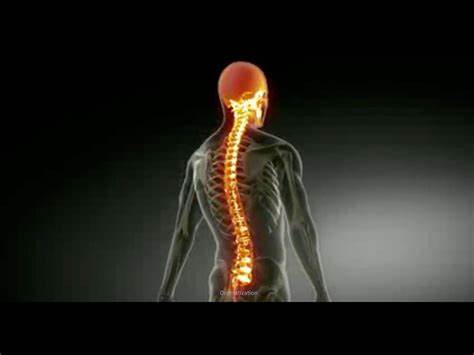

Quadriplegia

Spinal cord injury (SCI) is a traumatic event that impacts a patient’s physical, psychological, and social well-being and places substantial financial burden on health care systems. To determine the true impact of SCI, this systematic review aims to summarize literature reporting on either the incidence or prevalence of SCI.
Spinal cord injury (SCI) is a traumatic event that results in disturbances to normal sensory, motor, or autonomic function and ultimately impacts a patient’s physical, psychological, and social well-being.1–3 The management of SCIs requires significant health care resources and can place a substantial financial burden on patients, their families, and the community.3 These costs are largely due to a need for high-level acute care in the short term and associated secondary complications that occur in the long term.4 To improve injury management, it is necessary to quantify the incidence and prevalence of SCI to better understand rates of occurrence and delineate ways of prevention. Furthermore, this knowledge enables health care providers to estimate both the cost and psychosocial burden of this disease and the resources required for its management.
Quadriplegia is caused by damage to the brain or the spinal cord at a high level C1 - C7 - in particular, spinal cord injuries secondary to an injury to the cervical spine. The injury, known as a lesion, causes victims to lose partial or total function of all four limbs, meaning the arms and the legs. Quadriplegia is defined in many ways; C1-C4 usually affects arm movement more so than a C5-C7 injury (Spine and spinal cord picture and information C1 to S5 Vertebra); however all quadriplegics have or have had some kind of finger dysfunction. So, it is not uncommon to have a quadriplegic with fully functional arms, only having their fingers not working.
Quadriplegia treatment is catered to the specific needs of each patient and often depends on the nature and severity of a person's condition. Treatment generally addresses a patient's loss of functioning and feeling in certain areas of the body, loss or impairments in organ functioning
Today, spinal cord injury treatment focuses on preventing further injury and enabling people with a spinal cord injury to return to an active and productive life within the limits of their disability.